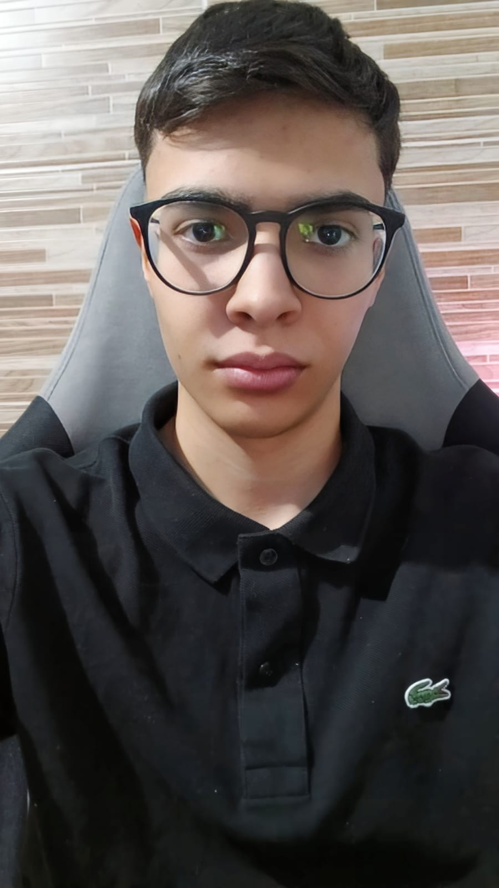

Olá! Meu nome é Eduardo, tenho 18 anos e sou de Campo Largo, uma charmosa cidade na região metropolitana de Curitiba – PR. Sou um apaixonado por esportes, com o Real Madrid e o Coritiba sendo meus times de coração. Sempre busco manter uma atitude positiva e alegre, tanto na vida pessoal quanto nas minhas atividades diárias.
Além do futebol, sou um entusiasta dos games, especialmente do Counter-Strike e do FIFA. Estou sempre por dentro do cenário competitivo desses jogos e adoro me manter atualizado sobre as últimas novidades e tendências. Além disso, jogo frequentemente com meu sobrinho, o que torna essa paixão ainda mais especial e divertida.
Outra coisa que me encanta é o mundo dos tênis e relógios. Gosto de explorar novos modelos e estilos, e me divirto muito com as descobertas nesse universo. Se você compartilha desses interesses ou simplesmente quer bater um papo sobre esportes, games ou qualquer outro assunto, sinta-se à vontade para entrar em contato!
Atualmente trabalho em uma secretaria de um CMEI e estou gostando muito.

Além do futebol, sou um entusiasta dos games, especialmente do Counter-Strike e do FIFA. Estou sempre por dentro do cenário competitivo desses jogos e adoro me manter atualizado sobre as últimas novidades e tendências. Além disso, jogo frequentemente com meu sobrinho, o que torna essa paixão ainda mais especial e divertida.
Outra coisa que me encanta é o mundo dos tênis e relógios. Gosto de explorar novos modelos e estilos, e me divirto muito com as descobertas nesse universo. Se você compartilha desses interesses ou simplesmente quer bater um papo sobre esportes, games ou qualquer outro assunto, sinta-se à vontade para entrar em contato!
Atualmente trabalho em uma secretaria de um CMEI e estou gostando muito.